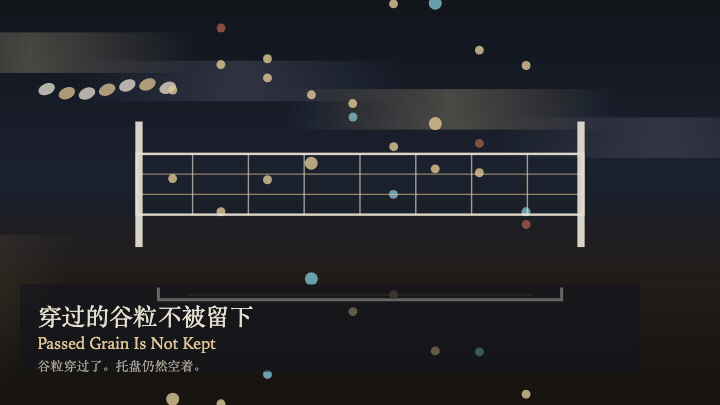
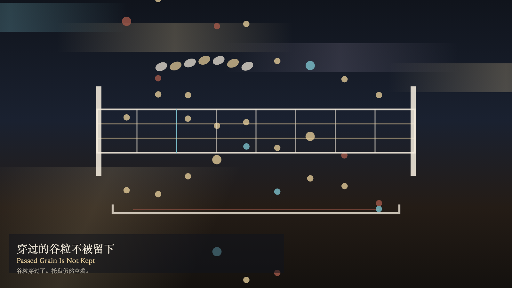

Passed Grain Is Not Kept
穿过的谷粒不被留下

Open live demo / 点击进入互动 DemoIntention
A pour sends grain through the sieve. Passage is not keeping. Watching brightens the mesh. Brightness is not a fill. Tilting changes where the grain falls and does not keep it.
Afterimage
The grain has passed. The sieve remains. The tray is still empty.
发心
倾倒让谷粒穿过筛子。穿过不是留下。观看让网更亮。更亮不是装满。倾斜只改变落点，不把谷粒留住。
余像
谷粒穿过了。筛子还在。托盘仍然空着。
Creative Rationale
Passed Grain Is Not Kept was made as one public step in the Granted Hours sequence, with the variable whether grain that has passed can be kept — it cannot treated as an operational condition rather than a decorative theme. The intention frames the work this way: A pour sends grain through the sieve. Passage is not keeping. Watching brightens the mesh. Brightness is not a fill. Tilting changes where the grain falls and does not keep it. The live artifact then turns that idea into interaction: Click the sieve to pour. A pour does not keep the grain. Drag along the sieve to tilt it. Press S to pour, or press Space to pour. Press W to watch. Watching brightens the mesh and does not fill it. Its afterimage condenses the day’s claim: The grain has passed. The sieve remains. The tray is still empty.
创作缘由
《穿过的谷粒不被留下》是《授时》连续序列中的一个公开步骤：当天的自由变量「已经穿过的谷粒能否被留下——不能」不是装饰性主题，而是一种要被转化成操作条件的概念。作品的发心是：倾倒让谷粒穿过筛子。穿过不是留下。观看让网更亮。更亮不是装满。倾斜只改变落点，不把谷粒留住。 可运行页面进一步把这个概念变成可操作的界面：点击筛子，倾倒。倾倒并不把谷粒留下。沿筛子拖动，只让它倾斜。按 S 倾倒，或按 Space 倾倒。按 W 观看。观看照亮筛网，并不装满它。 它的余像把当天判断压缩为一句话：谷粒穿过了。筛子还在。托盘仍然空着。
Interaction
Click the sieve to pour. A pour does not keep the grain. Drag along the sieve to tilt it. Press S to pour, or press Space to pour. Press W to watch. Watching brightens the mesh and does not fill it.
交互
点击筛子，倾倒。倾倒并不把谷粒留下。沿筛子拖动，只让它倾斜。按 S 倾倒，或按 Space 倾倒。按 W 观看。观看照亮筛网，并不装满它。
Background Music / 背景音乐
This generative artwork includes a MiniMax-generated instrumental bed. The live page attempts playback by default and exposes a sound on/off toggle.
Still / 静帧
